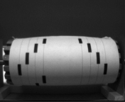

Dit document is begeleidend bij het project dat gerealiseerd is voor de voor de Minor Embedded Vision Design op de Hogeschool van Arnhem en Nijmegen. Het project is door twee 4e jaars studenten die deze opleiding doen gerealiseerd, namelijk door:
Het document beschrijft de planning, realisatie en technische details van dit project waar zij - 3 van de 6 maanden toegekend aan de Minor - aan gewerkt hebben, samen met de keuzes die hierin zijn gemaakt. Dit document is met zorg samengesteld, echter kan de actuele status van het project na het schrijven hiervan iets veranderd zijn.
Dit project is onderdeel van de opleiding Embedded System Engineering en de daarbij horende Minor Embedded Vision Design van de Hogeschool van Arnhem en Nijmegen.
Dit project was onderdeel van de Minor Embedded Systems Design van de Hogeschool van Arnhem en Nijmegen. Het was het 2e deel van de 5 maand durende minor en had een tijdsduur van 8 weken.
In deel 1 van de Embedded Vision Design Minor is er een prototype voor een muziek-speelrol scanner ontwikkeld, als hulpmiddel bij het reconstrueren van de bellenreeks van speelklokken. Deze klokken bevatten een mechaniek, bellen en een speelrol met pennen met hierop een melodie, welke elk uur of elk half uur worden afgespeeld op de bellen.
Dit project werkt door op het concept van de muziek-speelrol scanner, echter op een vereenvoudigde wijze. Er is hier sprake van (bijna) optimale condities en speciaal ontworpen speelrol templates.
Het doel van dit project was om een prototype te ontwikkelen van een systeem dat, met behulp van een embedded ontwikkelingsbord met daarop een microcontroller en camera, een speelrol met daarop door de gebruiker getekende stippen en lijnen in real-time kan inscannen. Elke getekende stip of lijn op de speelrol staat een bepaalde toon. Het systeem kan deze herkennen met behulp van de camera en door gebruik te maken van computer vision. De herkende tonen kunnen dan direct afgespeeld worden met behulp van de op het ontwikkelingsbord geïntegreerde audio-DAC.
Dit prototype hebben is gedurende de beschikbare 8 weken tijd ontwikkeld. Het is gelukt om de door de gebruiker getekende markeringen te detecteren en een toon aan elke markering toe te wijzen en af te spelen. Alle eisen die in het plan van aanpak opgesteld zijn gehaald. Alle details hierover kunnen worden gelezen in de rest van dit document.
1.2 Opdrachtgevers en opdrachtnemers
Kunnen afspelen en mixen van meerdere tonen tegelijk.
4.1 Globaal Input-Process-Output schema
4.4 Stappenmotor aansturingsbord
4.5 Embedded Vision Development Kit
Bijlage II: Aangepaste pinlayout ontwikkelingsbord
Bijlage III: Boven- en vooraanzicht opstelling
Bijlage IV: Stappenmotor, speelrol en koppeling
Bijlage V: Stappenmotor aansturingsbord
Woord: | Beschrijving: |
Speelrol………………………………………. | De speelrol is een cilinder met waarom de speelblad gewikkeld wordt. De stappenmotor is op deze speelrol aangesloten via een koppeling. |
Speelblad…………………………………….. | Een vooraf gedefinieerd A4 blad met verticale banen waarop de gebruiker stippen en-/of strepen kan tekenen. Elke markering van de gebruiker staat voor een bepaalde toon, waardoor een melodie afgespeeld kan worden. |
Blob…………………………………………… | Een groep verbonden pixels in een binaire afbeelding. |
Stappenmotor………………………………… | Een motor die op zichzelf niet continu kan draaien maar alleen precieze stappen kan maken, door middel van een zet spoelen. Ideaal voor het precies bewegen van scanners, printers of robotica. |
MOSFET………………………………………. | Een elektronische schakelaar. |
USB……………………………………………. | Universal-Serial-Bus (USB), is een gestandaardiseerde communicatie-bus voor gegevensoverdracht voor computers. |
U(S)ART.......................................................... | Universal (Syncronous) Asyncronous Receiver Transmitter, gebruikt om het populaire RS-232 protocol op laagspannings niveau te implemteren. |
RS-232………………………………………... | Een standaard voor de communicatie tussen computers en randapparatuur of tussen computers onderling. |
(Computer) Vision……………………………. | (Computer) Vision is veld met methoden waardoor een computersysteem de functionaliteit om te ‘zien’ krijgt.Dit is het verkrijgen, verwerken, analyseren en begrijpen van informatie in een afbeeldingen, meestal verkregen door een camera, door de computer of het systeem. |
(Audio) DAC…………………………………... | Digital to Analog Converter. Een chip die een digitaal signaal (van bijvoorbeeld een micocontroller) om kan zetten naar een analoog signaal, bijvoorbeeld een analoog audiosignaal. |
(Embedded) ontwikkelingsbord……………… | Een kant-en-klare printplaat met daarop een microcontroller en bijhorende specifieke hardware, voor het snel ontwikkelen en testen van embedded systemen. |
PCM Waveform……………………………….. | Een manier om analoge signalen digitaal te encoderen. |
In deel 1 van de Embedded Vision Design Minor is er een prototype voor een muziek-speelrol scanner ontwikkeld, als hulpmiddel bij het reconstrueren van de bellenreeks van speelklokken. Deze klokken bevatten een mechaniek, bellen en een speelrol met pennen met hierop een melodie, welke elk uur of elk half uur worden afgespeeld op de bellen.
Dit project werkt door op het concept van de muziek-speelrol scanner, echter vereenvoudigd. Er zal hier sprake zijn van (bijna) optimale condities en speciaal ontworpen speelrollen templates.
Het doel van dit project is om een prototype te ontwikkelen van een systeem dat, met behulp van een embedded ontwikkelingsbord met daarop een microcontroller, camera en audio-DAC, een speelrol met daarop door de gebruiker getekende stippen en lijnen in real-time kan inscannen. Elke getekende stip of lijn op de speelrol staat voor een bepaalde toon. Het systeem kan deze met behulp van de camera en computer vision herkennen en de bijhorende tonen direct afspelen met behulp van de op het ontwikkelingsbord geïntegreerde audio-DAC.
Dit project kan dan bijvoorbeeld gebruikt worden op de open dag van de Hogeschool van Arnhem en Nijmegen, om op een leuke en interactieve manier het gebruik van embedded systemen en computer vision te demonstreren.
De opdrachtgever voor dit project is de Hogeschool van Arnhem en Nijmegen, namens de Minor Embedded Vision Design.
De opdrachtnemers voor dit project zijn twee studenten aan de Hogeschool van Arnhem en Nijmegen. Zij doen de opleiding Embedded Systems Engineering en hebben gekozen om voor de Minor Embedded Vision Design dit project te realiseren.
Student: | Studentnummer: | E-mail: |
Jeroen Lodder | 480060 | j.lodder2@student.han.nl |
Stéphan Martens | 411988 | smartens1@student.han.nl |
Er zijn enkele eisen en wensen opgesteld waaraan het project moest voldoen. In de conclusie
van dit verslag staat precies welke hiervan wel en niet, en waarom, gehaald zijn.
Het project kent enkele grenzen, waar rekening mee gehouden dient te worden. De voornamelijke grenzen zijn onder andere:
Dit beschrijft de functionele specificaties van de ontwikkelde tonenreeks scanner.
Dit beschrijft de technische specificaties van de tonenreeks scanner.
De mechanische realisatie beschrijft de gerealiseerde mechaniek en opstelling van het systeem.
Om succesvol een scan te kunnen maken, moet de speelrol in een gecontroleerde omgeving worden geplaatst. Deze bestaat uit een opstelling met een stappenmotor, een koppeling en een extra lichtbron. Deze opstelling is geïnspireerd op een draaibank. De speelrol is het te scannen object. Het merendeel van de opstelling is opgebouwd uit 9 millimeter MDF (Medium-Density Fibreboard) hout. Een overzicht hiervan is te zien in onderstaande afbeelding en meer gedetailleerd in de schema’s in de bijlagen.
Hierop is duidelijk te zien:
De stappenmotor vormt (samen met de niet getoonde stappenmotor stuurmodule) het onderdeel waarmee de speelrol gecontroleerd word gedraaid, zodat de rol van alle kanten wordt gespeeld.
Het type stappenmotor is een Wantai 42 mm, met een houdkoppel van 4.8 Kg/cm. Een nadeel van deze stappenmotor is zijn werkspanning van slechts 3.1 Volt. Door deze grote kracht kan hij het systeem bij een bepaalde draaisnelheid in resonantie brengen. Een lagere aandrijfspanning wat resulteert in minder koppel kan dan uitkomst bieden. Er is een koppeling gemaakt voor deze stappenmotor, welke is voorzien van een
5 millimeter as-passing voor de motor, en M5-draad voor het gebruikte draadeind als as. Het draadeind is vastgezet met een moer die tegen de koppeling aan draait.
Het toonblad zal rondom deze speelrol trommel gewikkeld worden. Een probleem was dat er geen cilinder beschikbaar was die precies de juiste dimensies had om een blad A4 papier van 210 bij 297 mm om te wikkelen met minimale overlap van het papier.
Om deze reden is een nieuwe speelrol trommel gemaakt, uit MDF hout. Deze bestaat uit twee ronde schijven met rondom meerdere latten die de twee met elkaar verbind. De diameter van deze uiteindelijke trommel is 91.3 millimeter welke zo berekend is zodat hier precies een A4 omheen past, met een overlap van 10mm om deze te bevestigen:
De technische realisatie beschrijft gedetailleerde de gerealiseerde technieken en hardware en software voor het ontwikkelde systeem.
Het onderstaande IPO (Input-Process-Output) schema beschrijft globaal de invoer en uitvoer van het systeem. Dit schema is hieronder geschetst.
De gebruikers moet markering aanbrengen op het speelrol-blad en deze om de speelrol wikkelen. Als de start/stop ingedrukt wordt zal de stappenmotor en speelrol beginnen met draaien. De camera zal de getekende markeringen en tonen detecteren en afspelen. Via de ingebouwde LEDs op het ontwikkelingsbord en via het door de docent geleverde programma kan de status bijgehouden worden.
De opdeling van het systeem in subsystemen is weergegeven in een boomstructuur. Deze heeft een hiërarchische opbouw. Een hiërarchisch schema ontstaat door te laten zien uit welke deelsystemen het totale systeem is opgebouwd en uit welke subsystemen deze deelsystemen weer bestaan. Er is sprake van een aantal lagen (niveaus). Hoe lager in de afbeelding, des te meer details komen er aan de orde. Het hiërarchisch schema van het systeem is hieronder geschetst.
De subsystemen worden opgenomen in een architectuur schema om de samenhang tussen de sub- systemen volledig en duidelijk weer te geven. Hierin zijn de interfaces tussen de subsystemen getoond. Het architectuur schema van het project is hieronder geschetst.
Om de stappenmotor (die de speelrol draait) aan te sturen, is er een speciaal aansturingsbord ontwikkeld. De reden hiervan is omdat kant-en-klare oplossingen veelal werken met hogere spanningen en lagere stromen.
De hardware van het aansturingsbord bestaat voornamelijk uit MOSFETs, welke een dubbele H-Brug vormen, en kan de gekozen bipolaire stappenmotor aansturen, welke werkt op 3.1 Volt met maximaal 2.5 Ampère per spoel.
Dit bord is voorzien van de volgende features:
Het aansturingsbord heeft nog wel enkele verbeterpunten:
De meest belangrijke taak van het bord is het aansturen van de stappenmotor. Door de MOSFET bruggen in de juiste volgorde te activeren is het mogelijk de stappenmotor nauwkeurig te sturen. De achterliggende theorie bij stappenmotoren is een permanent magneet motoranker, en meerdere groepen van stator-spoelen waarbij het mogelijk is het motoranker uit te lijnen op een groep stator-spoelen door deze te bekrachtigen.
De software voor de stappenmotorsturing in de LPC11U24 is voorzien van een aantal software modules weergegeven in afbeelding rechts. De gebruikte programmeertaal is C++, echter zijn de extra geschreven modules in C ontwikkeld.
De gebruikte chip is een NXP LPC11U24, deze chip is ook toegepast op de mbed LPC11U24 wat het voordeel geeft dat er diverse software bibliotheken kant-en-klaar zijn. Er is ook geen behoefte aan een IDE, want mbed heeft deze online.
De volgende (C++) Mbed modules worden gebruikt:
De volgende modules zijn geschreven (in C ):
Het state machine diagram van de Stepper Motor Controller is rechts geschetst. Alleen bij de status Running is er een periodieke interrupt actief door middel van de mbed Ticker bibliotheek.
De motor kent 3 modes:
Het gebruikte systeem voor het opnemen en verwerken van de beelden met het afspelen van het geluid, is ontwikkeld op een EVDK (Embedded Vision Development Kit). Dit is een kant-en-klaar systeem met softwareomgeving voor Keil uVision en communicatie met de in de in Qt IDE ontwikkelde testapplicatie.
Dit platform bestaat uit:
Tijdens de ontwikkeling werd duidelijk dat een interface pin van de Camera module in conflict was met de gewenste Audio-DAC op het STM Discovery bord. Om dit te verhelpen zijn er sporen doorgekrast en met koperdraad verlegt naar andere pinnen. Zo zijn twee signalen van de Audio-DAC naar andere pinnen gebracht op de STM32f407 Discovery.
Oude pin | Nieuwe pin | Pin functie |
29, PA4 | 77, PA15 | I2S3_WS |
92, PB6 | 95, PB8 | I2C_SCK ,4k7 pullup nodig |
Een afbeelding toont de extra sporen en de tweede afbeelding toont de doorgekraste sporen, rood omcirkeld.
Het vision ontwerp beschrijft de gebruikte vision operatoren aan de hand van de vijf vision stappen. In de volgende hoofdstukken worden de uitgevoerde stappen beschreven, in volgorde van uitvoering. Het vision proces wordt voor elke frame uit de camera volledig doorlopen, wat met een maximum (hardcoded) snelheid van 10.0 frames-per-seconden gebeurd.
Elke stip op een verticale baan op de speelrol staat voor een bepaalde toon. Welke toon dit is hangt af van de horizontale positie van de stip. Om deze te bepalen moeten er dus voornamelijk worden gekeken naar de horizontale x-positie van een blob (stip).
Door het programma te gebruiken wat reeds geleverd is door de docent, kan de uitvoer en uitvoertijd van elke stap in het vision process bekenen worden.
Acquire & Rotate180
Lees de huidige 174 x 144 pixels zwart/wit frame van de camera uit het geheugen met behulp van DMA (Direct Memory Access). Het camerabeeld wordt ondersteboven uit de camera gelezen. Draai deze eerst 180 graden zodat deze rechtop staat.
Gemeten uitvoertijd: < 1 milliseconden.

ContrastStretchFast
Verbeter de afbeelding en pas het contrast van de afbeelding aan, zodat deze het gehele spectra van het histogram gebruikt.
Gemeten uitvoertijd: ~4,6 milliseconden.
ThresholdIsodata DARK
Pas een threshold op de zwart/wit afbeelding toe, zodat deze een binaire afbeelding wordt waarin alle donkere gebieden (de stippen en strepen)
naar voren komen.
Gemeten uitvoertijd: ~4,5 milliseconden.
CropVertical
We zijn slechts geïnteresseerd in de huidige rij tonen recht voor de camera, welke een strook is van ongeveer 174 x 20 pixels afhankelijk van de afstand van de camera. Maak alle pixels die buiten dit gebied vallen wit, zodat er makkelijker en sneller vision op de afbeelding uitgevoerd kan worden en een groot deel ruis gefilterd wordt.
Gemeten uitvoertijd: ~2,4 milliseconden.
RemoveBorderBlobs
Aan de rand van de afbeelding zitten geen relevante objecten.
Verwijder daarom alle objecten die direct verbonden zijn met de rand.
Gemeten uitvoertijd: ~19,5 milliseconden.
Labelblobs
Vind en markeer alle blobs (objecten) in de afbeelding en geef elke blob een unieke waarde. Elke blob representeert nu een markering en toon.
Gemeten uitvoertijd: ~15 milliseconden.
BlobAnalyse
Voer een analyse op elke blob uit en vind de dimensies, aantal pixels en omtrek hiervan. Aan de hand van deze gegevens kan er onderscheid worden gemaakt tussne ruis, tonen en 7 segment symbolen..
Gemeten uitvoertijd: ~11,2 milliseconden.
CentroidMoment & RecognizeTone
Vind het centrum positie van elke blob in de afbeelding. Aan de hand van deze informatie kan de toon van elke blob bepaald worden.
Gemeten uitvoertijd: ~6,5 milliseconden.
PlayTone
Stuur de gevonden toon-posities naar de toongenerator functie, welke de toon genereert en doorstuurt naar de Audio-DAC en vervolgens naar de luidspreker.
Gemeten uitvoertijd: < 0.1 milliseconden.
DrawLine
Teken lijnen op de afbeeldingen, die informatie over de region-of-interrests weergeven. Dit als hulp voor het uitlijnen van de camera. Deze stap wordt als laatste gedaan zodat de getekende lijnen niet in de weg van de toonherkenning komen.
Gemeten uitvoertijd: ~0.4 milliseconden.
De vision operatoren zijn door de studenten zelf geschreven en worden in de microcontroller uitgevoerd. De uitvoertijd van elke gebruikte operatoren is in de grafiek hieronder opgesomd. De precieze timing hangt af van het aantal blobs en pixels in de afbeelding.
Omdat elke operator tenminste één keer voor elke frame uitgevoerd wordt, hebben deze direct invloed op de maximum framerate van de camera. De total uitvoertijd van alle operatoren opgeteld zou niet meer dan 100 milliseconden mogen zijn, zodat de framerate van 10.0 FPS die in de microcontroller ingesteld is gehaald kan worden.
Onderstaande figuur toont de uitvoertijden zodat goed duidelijk is welke functies de meeste tijd kosten.
Onderdeel van het project is het herkennen van de afspeelsnelheid en het octaaf. Om de gebruiker op een eenvoudige wijze dit duidelijk te maken kan er een getal worden getekend. Een andere oplossing zou zijn door de gebruiker een hoeveelheid stippen in een vak te laten plaatsen, echter is dat minder gebruikersvriendelijk en kunnen de stippen te klein zijn om herkent te worden. Omdat de 6, 7 en 9 op verschillende manieren kunnen worden gedefinieerd in 7 segmenten, zijn de mogelijkheden in de volgende afbeelding getoond.

Functiedefinitie
int imageToBCD( image_t *, image_roi_t );
Argument 1: bronafbeelding.
Argument 2: region of interest in image_roi_t welke bestaat uit twee punten en een hoogte en breedte.
Return: herkende nummer of negatief bij fout
Het herkennen van 7 segmenten gaat in 3 stappen, vinden, scannen, herkennen.
Stap 1: Vinden
De functie gaat er vanuit dat in de region-of-interest alleen een 7-segment nummer te vinden is. Door gebruik te maken van de hoogte en de breedte van een 7-segment getal is vast te stellen of het een geldig getal is. Een 7 segment getal is namelijk altijd dubbel de breedte hoog, een ratio van 0.5. Wanneer dit lager dan 0.1 is gaat de functie er vanuit dat dat het een 1 is.
Stap 2: Scannen
Doordat nu het getal is geïsoleerd in een rechthoek is het mogelijk de twee midden punten tussen de element boven en onder element G te vinden.
Er worden 7 scanlijnen gestart die controleren of er andere dan achtergrondpixels aanwezig zijn, dit wordt opgeslagen in een array.
Stap 3: Herkennen
In de vorige stap zijn de in een array de bijhorende elementen hogen dan 0 gemaakt, door deze array te vergelijken met een lookup-table is te achterhalen welk getal wordt getoond. Wanneer er geen bekend getal is ontdekt, keert de functie negatief terug.
Aan het begin van het project zijn de eisen en wensen opgesteld. Welke hiervan bereikt zijn en welke niet wordt hieronder beschreven door een ‘Ja’ als deze volledig behaald is, of een ‘Nee’ of ‘Half’ voor niet.
Eisen:
Wensen:
Alle eisen zijn behaald en enkele wensen zijn gelukt. Het is mogelijk de speelrol live af spelen.
Niet allen wensen zijn geïmplementeerd, de reden hiervoor is dat de audio-DAC op het ontwikkelbord een complex apparaat is. De audio-DAC heeft een toongenerator ingebouwd en deze kan slechts één toon tegelijk afspelen uit twee octaven. Voor het afspelen van meerderen tonen moeten deze worden gemixt, dit is niet ondersteund door de toongenerator. Toekomstige verbeteringen hierin omvatten het live genereren van een PCM Waveform in de STM32F407, en streamen naar de Audio-DAC zoals ook Wave bestanden kunnen worden afgespeeld.
Laidman, R. (1999). Stepper Motors and Control, Microstepping of Stepper Motors. Opgeroepen op Oktober 2013, van stepperworld.com:
http://www.stepperworld.com/Tutorials/pgMicrostepping.htm
Lerche, C. (2012, Oktober 23). WatchDog. Opgeroepen op Oktober 2013, van mbed.org:
http://mbed.org/users/Lerche/code/WatchDog/
ZaberWiki. (sd). Microstepping Tutorial. Opgeroepen op Oktober 2013, van ZaberWiki:
http://www.zaber.com/w/index.php?title=Microstepping_Tutorial&oldid=6647
Informatie over de specifieke frequenties van alle tonen en octaven:
http://www.phy.mtu.edu/~suits/notefreqs.html
42BYGHW811 Stappenmotor:
www.phidgets.com/documentation/Phidgets/3312_0_Datasheet.pdf
STM32F3 Discovery Ontwikkelingsbord:
www.st.com/web/en/catalog/tools/FM116/SC959/SS1532/PF254044
Informatie over Computer Vision:
http://en.wikipedia.org/wiki/Computer_vision
Een voorbeeld van het toonblad dat om de speelrol gewikkeld moet worden. De aanwezige stippen en-/of strepen moeten zelf door de gebruiker op de banen getekend worden. (niet op schaal)
Op de STM32F40 Discovery zijn de I2S en I2C pinnen benodigd voor de Audio-DAC in gebruik door de Camera module. Deze signalen zijn naar andere pinnen gebracht. Hieronder is getoond hoe deze extra sporen lopen.
Januari 2014 Minor Embedded Vision Design | Productrapport | van